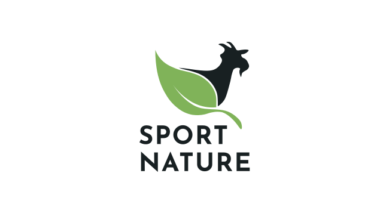
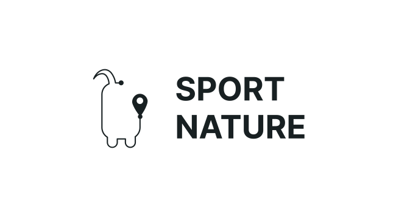

DECEMBER 2022
SPORT NATURE
Projeto desenvolvido em grupo, no contexto da júnior empresa jeKnowledge. A aplicação Sport Nature, tem como objetivo utilizar o desporto como meio de educação e promoção de hábitos de vida saudável. Ao longo da prática desportiva na natureza pretende-se aliciar os utentes a melhorar os seus níveis de atividade física e a ter um melhor conhecimento cultural e ambiental do concelho de Vila Nova de Poiares. Promovendo também a cultura e o conhecimento associado aos países que formam o seu consórcio. O meu trabalho restringiu-se à criação de uma identidade visual e às respetivas mockups da aplicação.

